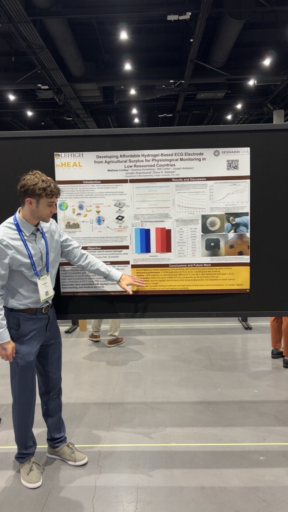

Affordable Hydrogel ECG Electrodes from Agricultural Surplus

The Problem
Machine learning and signal processing have made it easier than ever to spot cardiac problems from a simple ECG trace. The bottleneck in many low-resource regions isn't interpretation; it's the electrode. Standard Ag/AgCl gel electrodes are single-use, comparatively expensive, and wasteful, and they have to be shipped in. Millions of people still go without basic electrophysiological monitoring (ECG, EMG, EEG) as a result.
Our question was whether a community could make its own electrode gel from what it already grows.
Method
- Starch screening. We compared starches from mango, tapioca, corn and banana for how consistently they gelled. Corn and banana were the most reliable; we chose corn for its gelation and reproducibility.
- One-pot fabrication. Starch, glycerol (plasticizer), NaCl (for conductivity), water and gelatin are mixed and heated in one vessel, drop-cast into 3D-printed molds, and cooled into a gel. No specialized equipment is needed to make it.
- Assembly. Each electrode stacks the gel with an Ag/AgCl snap connector, EVA foam backing and medical adhesive, so it plugs into existing ECG leads.
- Testing. Mechanical testing on a Mark-10 tensile tester (Young's modulus), electrical testing with an LCR meter (signal amplitude and impedance across salt concentrations), and mass-retention testing at 22 °C and 50 °C against 3M Red Dot electrodes.
Results
- Gelatin is what makes it work. At least 5 wt% gelatin was needed for the gel to survive tensile testing, and more gelatin made it stiffer. It also cut curing time sharply, which matters if the gel is made by hand in a village rather than in a lab.
- Signal quality in range of commercial electrodes. In our bench tests, the gel averaged a peak-to-peak amplitude of 0.47, against 0.74 for 3M Red Dot and 0.68 for Kendall measured the same way.
- Composition has to be balanced. Excess oil in the starch reduced gel consistency, and impedance depended strongly on salt concentration.
What Comes Next
The gel is one piece of a cheaper monitoring system. The next steps are integrating it with a modular harness and pairing it with a Bluetooth-connected mobile ECG platform, so a low-cost electrode leads to a low-cost diagnosis at the point of care.
Off the Clock in San Diego
Between poster sessions I stepped out for some fresh air and found the gymnastic rings at Embarcadero Marina Park South, right on the water by the convention center.
Reference
- Alarcón-Segovia, L. C.; Madsen, K. E.; Liu, C.; et al. ACS Sustainable Chemistry & Engineering 2025, 13 (17), 6051–6063.